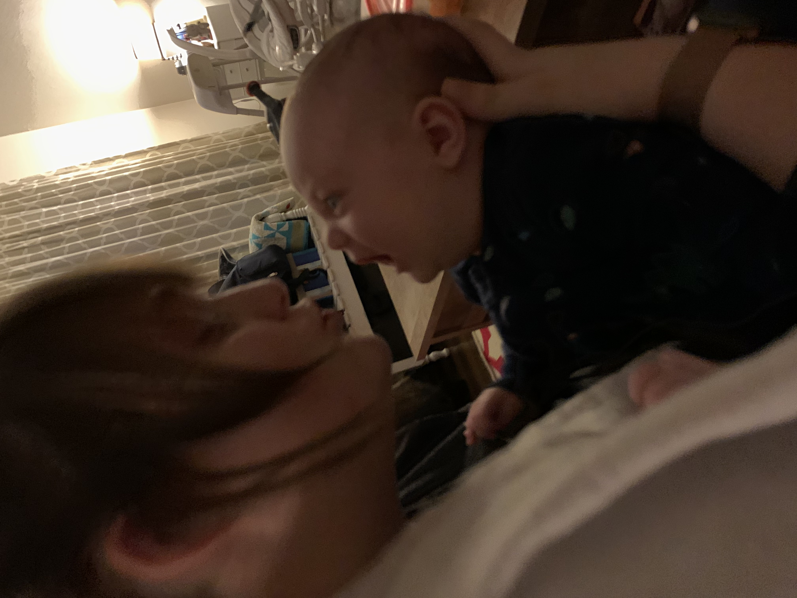
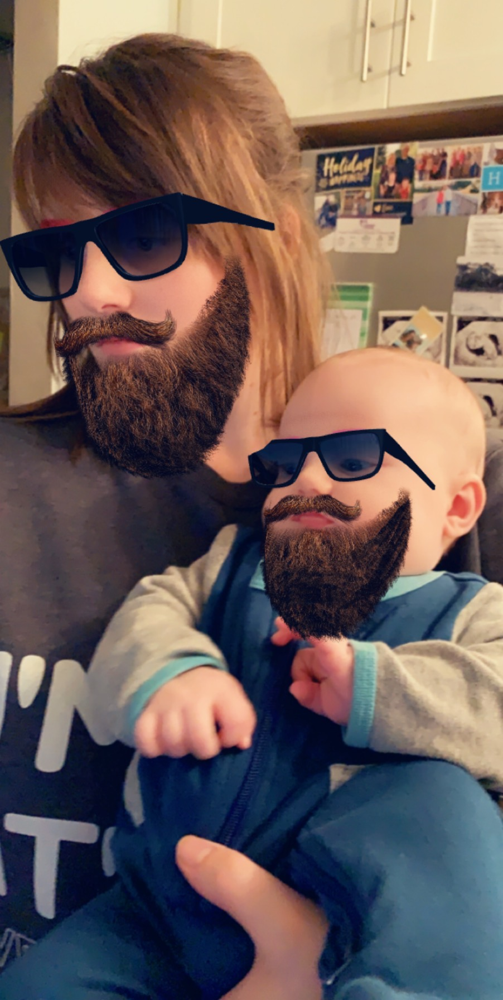
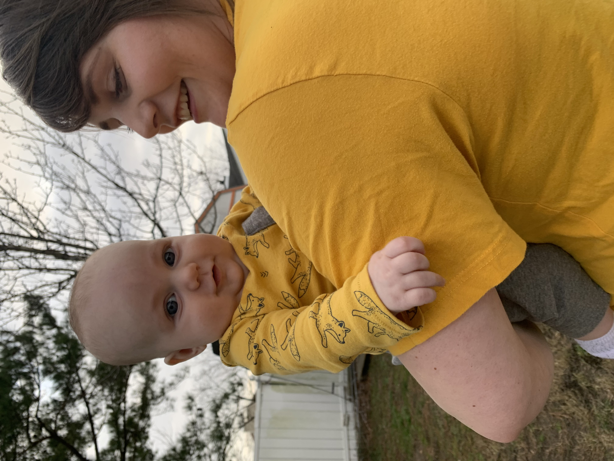
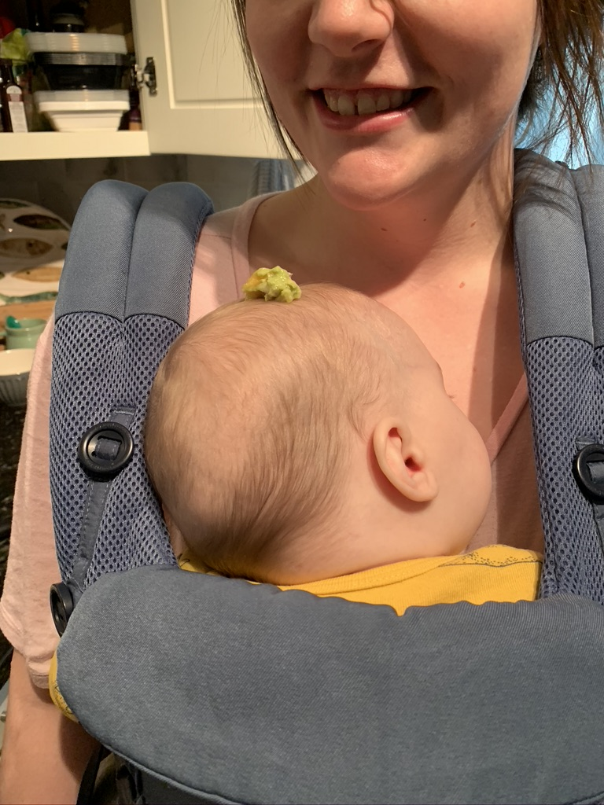
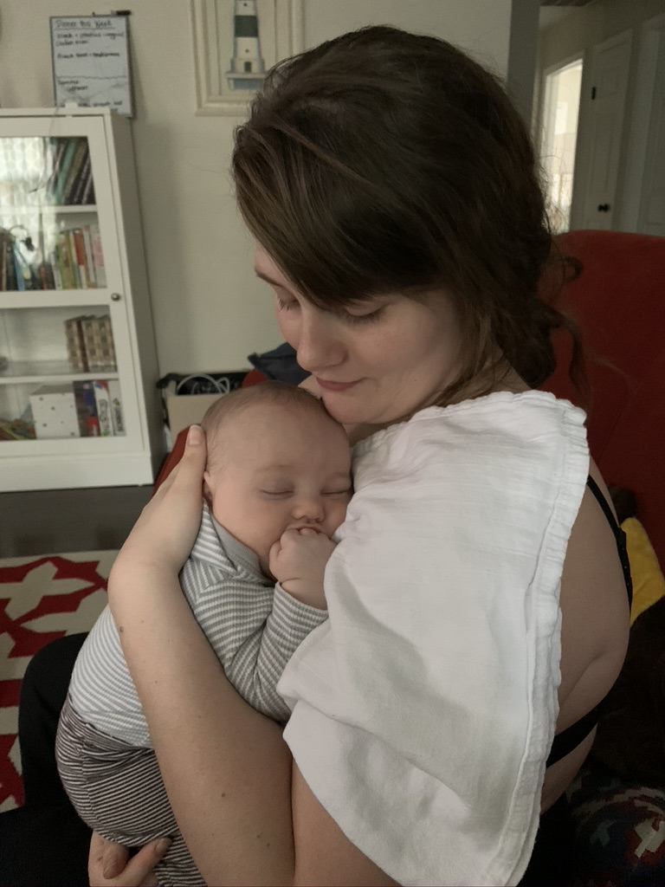
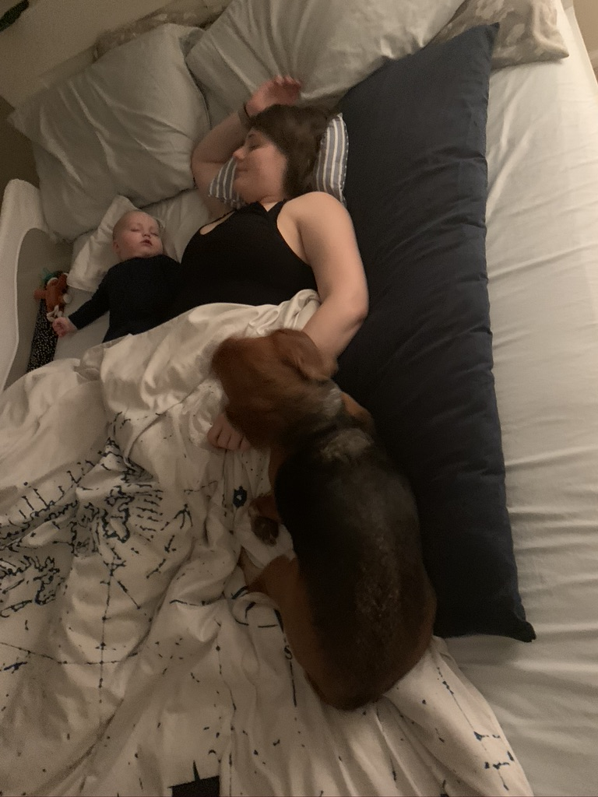

First of all, Happy Mother’s Day! It is a well earned celebration for you, from your hormones being all over the place to pushing a big headed baby out of your body, you’ve earned much more than just a day. I have been amazed at you from the very beginning of our relationship but watching you turn into a mother and handle all the stress, fear, and constant changes has cemented in me the fact that you are an amazing woman that is capable of much more than both of us can even begin to imagine. James and I are extremely lucky to have you in our lives. You are the best wife I could imagine and the best mother James could ever hope for.
My stress levels have never been higher than they have been with a little child constantly looking for ways to jump out of our arms at Chewie or eat something he’s not supposed to. You soak all my stress and fear of being a parent and get rid of it with simple things like a kiss or making me some food when I get hangry. I truly appreciate everything you’ve done to keep both of us sane during this whole moving, getting out of the Navy, and having a first child period of time. I hope I can repay you when we settle down by giving you every opportunity you want to start your photography business and do what you’ve always dreamed of doing. I know you will be successful, I just need to convince you.
I can’t wait to watch James grow and to see us grow with him. Who knows what the future has in store for us, D.C. or focusing on college or even just settling down in Canada, I can’t wait to take whatever journey comes our way with you. Any journey with you is sure to be filled with laughs, kisses, and lots of goofy dancing.
Thank you for your patience, love, and never-ending stream of kisses. Even though he doesn’t admit it, James loves you more than Chewie and the alarm combined. I love you and hope you have an amazing first Mother’s Day.
These pictures and videos are just some of my favorite memories we've made so far. I can't wait to make so many more with the both of you.